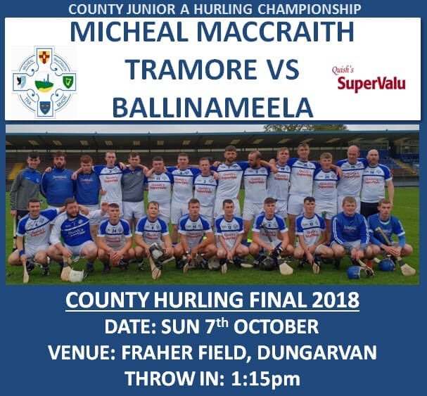

MY sporting life
Sports That I play
I have been playing sports from a young age i play soccer,hurling,football and golf.
My two favourite sports would have to be soccer and hurling.
Why I love sports?
Soccer
I play on goal in soccer and i have played there all my life. I play with the adult team in my club called Tramore afc
,I have represented my county Waterford on many occasions in underage and in youth football, The last few years I have been lucky enough to have won 2 FAI National cups
the u17 FAI cup and the Youth FAI cup the year after this is my biggest win in my sporting career.
View Tramore afc page through this link.

Hurling
I play hurling with my local team Tramore Gaa. The best team in our club is a junior team we were beaten in the county final last year
but this year we are hoping to be promoted back to intermediate hurling.I play in the forwards in hurling and really enjoy
playing it.
follow Tramore Gaa teams on this link

Football
I have played gealic all my life mainly for the fun of it our teams have not been as successful as other sports
it would not be as popular in tramore but is a good sport to keep you fit when other sports are over.
For more information on Imersive Experience check out this link
Return to page scroll